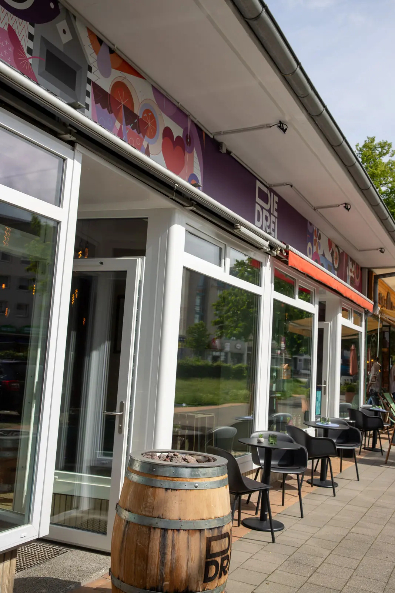
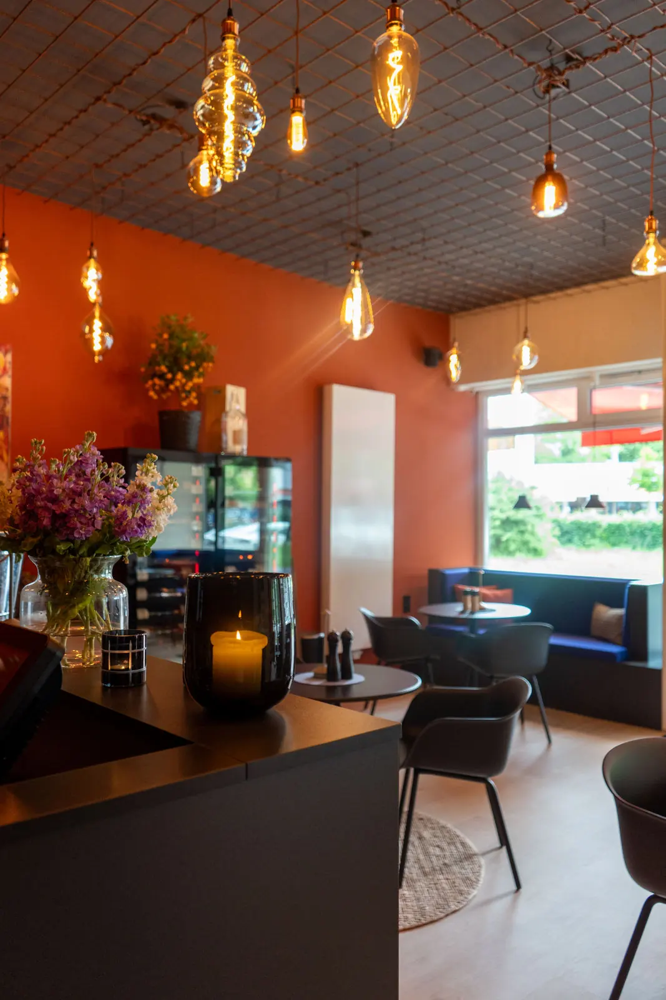

Besuch
Schön, dass Du vorbeikommst.
Öffnungszeiten
Mittwoch bis Sonntag, 17 bis 23 Uhr.
- MontagRuhetag
- DienstagRuhetag
- Mittwoch17:00 – 23:00 Uhr
- Donnerstag17:00 – 23:00 Uhr
- Freitag17:00 – 23:00 Uhr
- Samstag17:00 – 23:00 Uhr
- Sonntag17:00 – 23:00 Uhr
Auf einen Blick
- Adresse
- DIE DREI Weinbar Kiel
Knooper Weg 189
24118 Kiel - Telefon
- 0431 / 71978976
- info@diedreibar.de
- Bezahlen
- Bargeld, EC-Karte, Kreditkarte und kontaktlos (NFC)
Telefonische Reservierung
Dein Tisch bei uns.
Möchtest Du einen gemütlichen Abend mit Deinen Liebsten verbringen? Oder planst Du eine größere Feier? Dann freuen wir uns auf Deinen Anruf.
0431 / 71978976
Reservierungen und Anfragen für Feiern nehmen wir telefonisch entgegen – zu unseren Öffnungszeiten.
Jetzt anrufen
Anfahrt
So findest Du zu uns.
Du findest DIE DREI am Knooper Weg 189 in Kiel.
Wir binden bewusst keine Karte ein: Erst wenn Du einen der Links öffnest, werden Daten an den jeweiligen Kartendienst übertragen.